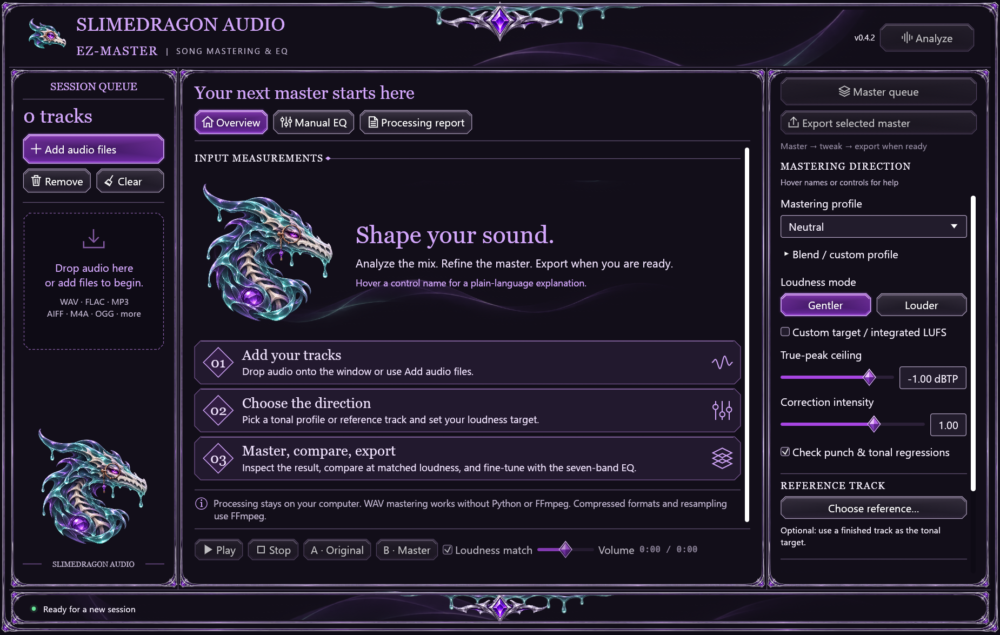
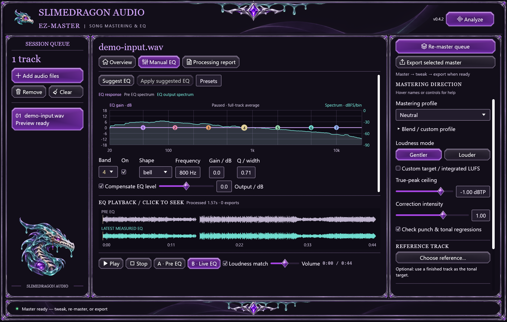
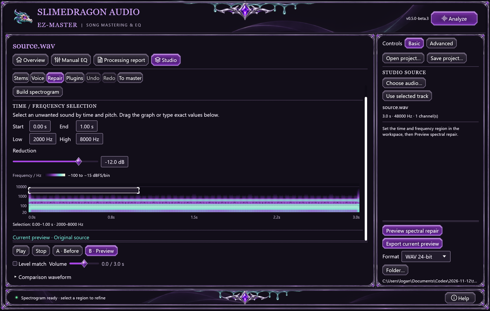

SlimeyBeats-EZ-Master
Local song mastering. Real-time EQ. Your music stays yours.
Your first master
- Add or drop your mono/stereo audio.
- Click Analyze at the top right.
- Choose a tonal profile and Gentler/Louder, then use the Master track or queue button. In the learning preview, Advanced reveals precise targets and the peak ceiling.
- Compare at matched loudness. Tweak Manual EQ or re-master before saving anything.
- Expand Export settings, select formats/folder, then Export selected master.

This image illustrates the earlier stable layout. The learning-preview captures below show the revised interface.
Learning preview: start at your pace
The unmerged feature/ux-learning branch adds an optional eight-step tour, Basic/Advanced controls and bottom-right Help (F1 on desktop). These changes are not part of published stable/preview packages or the public browser deployment yet.
Choose Show me around or I'll explore on my own. Finishing or dismissing the tour saves that choice immediately when storage succeeds. It will not offer itself again; Help can replay it manually. The tour never starts processing, downloads a model or saves audio for you.

Open the introduction at full size. Basic keeps common choices in view; Advanced reveals detail without resetting audio settings. Notices identify active hidden custom settings.
In compact Overview, Frequency balance · spectrum opens its graph. Manual EQ puts the selected band's frequency/gain in the sidebar; its curve and spectrum still share one graph. In Studio, voice/repair settings occupy the workspace and Preview stays beside Export. Compact stem rows show level, mute and solo together, with optional full-size waveforms.

Open the EQ capture at full size. The EQ capture uses the CC0 example; neither image contains redrawn controls. Tour, Help and remembered-choice details. To obtain this interface, follow the learning preview source instructions.
Try the included example
Open the example listening page, or add examples/audio/demo-input.wav to the app. These WAV files work without extra codecs. The example's recording is CC0; source and modifications are in its credits.
Use your ears and the meters
Hover control names for help. Gentler/Louder are different loudness intents, not quality scores. Suggested EQ is an editable rule-based starting point. The spectrum and the EQ response have different scales. Listening loudness match does not change your export.

Studio: work on the parts
These instructions cover the current source preview: desktop 0.5.0-beta.3, MCP 0.2.0-beta.3 and browser Studio 0.3.0-beta.3. Beta.3 binary packages have not been published as a GitHub release; build the current source for these features. Earlier beta.2 packages retain their original behavior; stable v0.4.2 does not include Studio.

Open the repair capture at full size.
- Open Studio → Stem Studio. Click Choose stem files… to select several aligned files together, or Choose Suno / stem ZIP…. Dropping one ZIP anywhere in the desktop app, or several audio files in Studio, opens a review.
- Review the cards in the center workspace. Within one logical source folder, matching WAV/MP3 basenames count once, ignoring case; matching
wav/ and mp3/ encoding folders under the same parent are paired too. Distinct source folders keep separate parts even when friendly names repeat. WAV is preferred; choose MP3 if wanted. Missing preferred encodings fall back to the available version. Duplicate encodings within one logical group remain ambiguous.
- All discovered parts start selected; there is no fixed imported-part ceiling. Uncheck anything you do not want, retain at least two aligned parts, then click Import selected stems. Filename-based role suggestions are a naming heuristic, not audio inference; review the selection. Named instrument types and extensible
part_N IDs cover repeated/custom instruments. IDs must be unique even when friendly names repeat. Exclude an original/full mix when importing its stems. Review, discard, cancellation or invalid files leave the previous preview intact.
- Adjust levels, mute/solo and stereo balance, then update the mix preview. Use Voice cleanup or Spectral repair on a recording, stem or current preview. Compare Before and Preview; apply a direct edit back to its part while retaining the other stems.
- Use To master / Use for mastering to continue in the mastering queue, or export the current Studio preview. Raw stem exports and desktop projects retain the selected bank, subject to memory and file safeguards. Saving and processing are separate.
Imported stems or mix tracks need identical decoded sample rate, channel count and frame count, but no model. This remains an aligned mixer: removing the count ceiling adds no free timeline, beat matching, automatic alignment or new resampling controls. Prefer WAV consistently when available; different decoded lengths can make mixed-encoding fallback fail alignment. Friendly names survive edits/undo, raw manifests and desktop projects; stable IDs still address each part. In Assign files individually, choose Custom stem set and add slots as needed. Optional neural separation still produces vocal/instrumental or four stems only. Save a self-contained project to resume the prepared audio and mix. Compatible desktop VST3 effects use the included worker.
ZIP import reads WAV/MP3 only, ignores cover art/metadata and extracts selected audio privately, with no uploads. Native limits are 512 MiB decoded per input by default plus a separate 4 GiB decoded-bank guard; processing needs additional RAM. Desktop/MCP ZIP limits remain 1 GiB per archive and 512 MiB per expanded audio entry. Inspection has an 8 MiB metadata budget, counting UTF-8 filename bytes plus 256 bytes per file/entry, including ignored entries. Native MP3 decoding requires FFmpeg/ffprobe. Full Studio workflow, resource limits and qualification scope.
Browser Studio
Use Choose stem files, Choose Suno / stem ZIP, or drop files onto Import a whole stem set. All discovered parts start selected; review the parts and encoding, uncheck anything unwanted, then Import selected stems. Browser bulk pickers expose filenames without original folders; use a ZIP with distinct source folders or individual assignments for repeated basenames. Check selected/omitted counts, preferred encoding and fallback use beside Import. Expand Left out to inspect all omitted names; the disclosure also works from the keyboard. Review or invalid/cancelled imports retain the previous preview.
Browser ZIPs and each decompressed audio entry are limited to 128 MiB. The existing 128 MiB combined decoded-input budget across all stems and 15-minute per-file guard still apply. More tracks share the same decoded-input allowance; compressed size does not measure PCM memory. Actual capacity also depends on hardware and processing buffers. Use desktop for larger banks, subject to its own resource limits. Raw stem ZIPs contain one WAV per selected part plus stems.json, mapping stable filenames/kinds to friendly display_name values. Audio stays local. Save/download before closing or reloading the tab.
Let an AI assistant help
In the desktop learning preview, open Help → AI setup, choose dedicated audio/export folders, generate the connection example, then copy it into your compatible client's supported MCP setup. The in-app helper uses the real companion's print-config command; it does not change client settings or start a server connection. Connect AI assistant in the Start menu provides the standalone setup helper.
Ask the assistant to prepare a preview before exporting. For ZIP stems, get_help topic stems explains read-only inspect_stem_bundle, selection and import_stem_bundle; exporting remains a separate request. Audio processing is local; the AI client controls metadata sent to its provider. Browser Help explains the desktop companion; it adds no upload or browser connection bridge. Connection and tool guide.
Files and codecs
WAV is native. MP3/FLAC, other compressed inputs and resampling require separate FFmpeg/ffprobe installation. Settings and the default output folder stay beside an ordinary installed copy; choose another export folder if you prefer. Uninstall preserves user data and Examples.
Your music stays yours
The project claims no ownership or royalties in your audio and requires no music credit, watermark or revenue share. Software copies retain MIT notices. Third-party recordings/samples retain their own rights. See the ownership policy and MIT license.